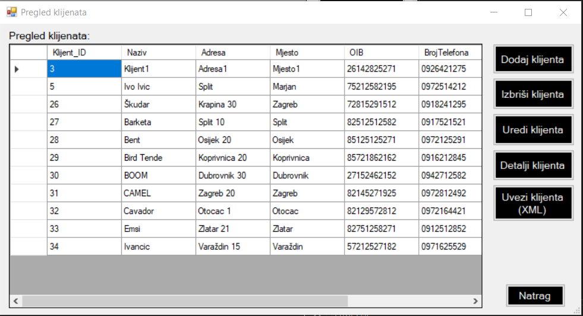

Ovo je forma koja se prikazuje kada se korisnik prijavi u sustav te klikne na gumb 'klijenti'. Na formi je prikazan datagridview u kojem se prikazuju popis svih klijenata. Kraj popisa klijenata nalazi se 5 gumba, 'Dodaj klijenta', 'Izbriši klijenta', 'Uredi klijenta', 'Detalji klijenta', 'Uvezi klijenta (XML)' te gumb 'Natrag'. Gumb 'Dodaj klijenta' služi nam za dodavanje klijenta, odnosno otvara nam novu formu za dodavanje klijenta. Gumb 'Izbriši klijenta' radi na principu da morate selektirati jednog klijenta te klikom na gumb brišete odabranog klijenta. Međutim postoji ograničenje, a to je da klijenta se ne može izbrisati ako je uz njega vezan radni nalog, račun ili roba. Ukoliko ćete pokušati obrisati klijenta koji ima radni nalog, račun ili robu, prikazat će Vam se skočni prozor gdje ćete biti obaviješteni da ne možete obrisati klijenta. Gumb 'Uredi klijenta' otvara nam formu gdje onda možemo urediti podatke o klijentu. Gumb 'Detalji klijenta' funkcionira na način da selektirate jednog klijenta i klikom na gumb otvara Vam se nova forma gdje se prikazuju detalji za selektiranog klijenta. Gumb 'Uvezi klijenta (XML)' služi da bismo unijeli klijente u bazu preko XML datoteke. Klikom na gumb otvara nam se nova forma gdje možemo unijeti nove klijente iz XML datoteke. Na kraju forme nalazi se gumb 'Natrag' koji nas vraća na početnu formu.
